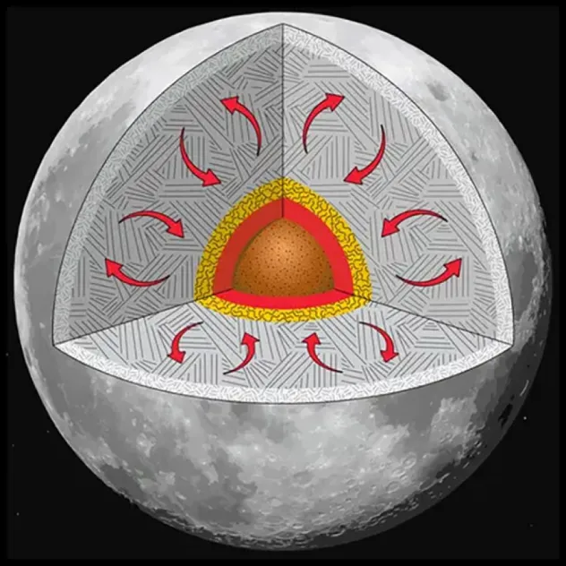
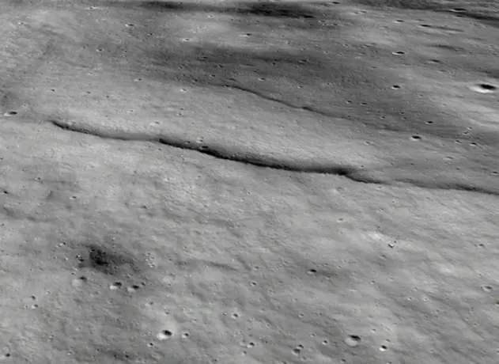

https://iopscience.iop.org/article/10.3847/PSJ/ae9eae
달은 지구와 달리 하나의 지각판으로 덮여 있으며,
마그마 활동도 거의 일어나지 않는다.
그렇기에 지진이 일어날 이유가 없어야 정상이지만,
달에서는 달 지진이라는 현상이 발생한다.
이런 지진이 발생하는 이유는 바로 달의 내부 온도가
점차 냉각되면서 발생한 수축 때문이다.

이런 달의 수축 때문에 달 표면에는 주름이 생겨났다.
미국 스미스소니언 국립항공우주박물관은
NASA 달 탐사선이 17년간 촬영한 데이터를 분석했다.
그리하여 달이 수축하는 속도를 계산하는데 성공했다.
달은 지난 4억년에 걸쳐 대략 45미터 정도 수축됐다고 한다.
1년에 대략 0.1 마이크로 미터 정도라는 뜻.
미미한 크기 변동이지만 이것만으로도 달에서 지진이 일어난 것이다.
달의 수축은 앞으로 계속되며 대략 17조년 뒤에 멈출 거라 한다.
달은 부랄이다